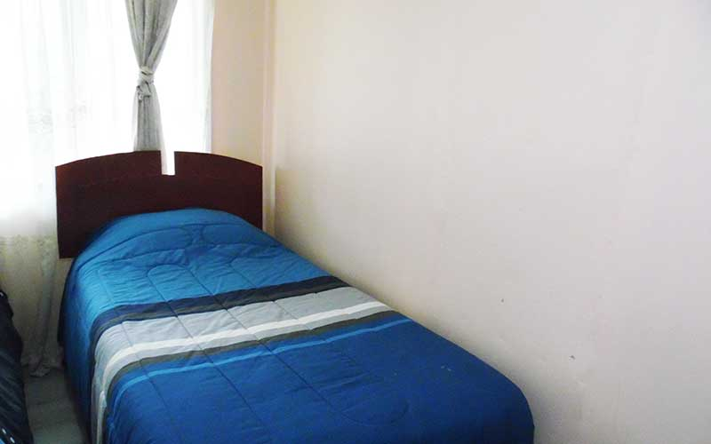

Para 1 persona
Habitación Individual
Un dormitorio tranquilo y luminoso con cama de una plaza, respaldo de madera y ropa de cama abrigada. Muy pedida por quienes vienen a Puerto Aysén por trabajo o viajan solos por la Patagonia.
Nota: Detalle de baño (privado/compartido) y tarifa por noche se confirman al reservar según disponibilidad.
Consultar por la Habitación Individual